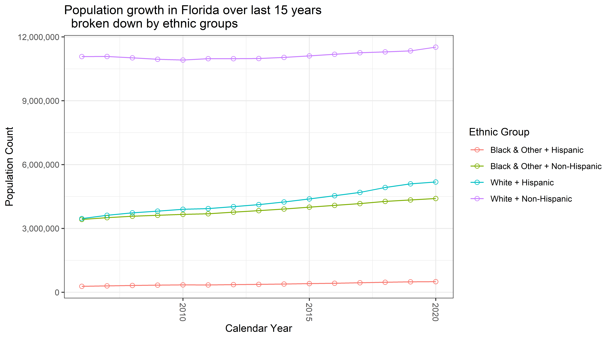
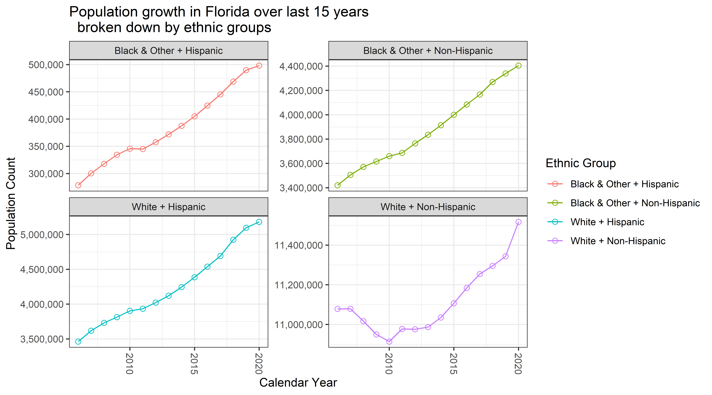
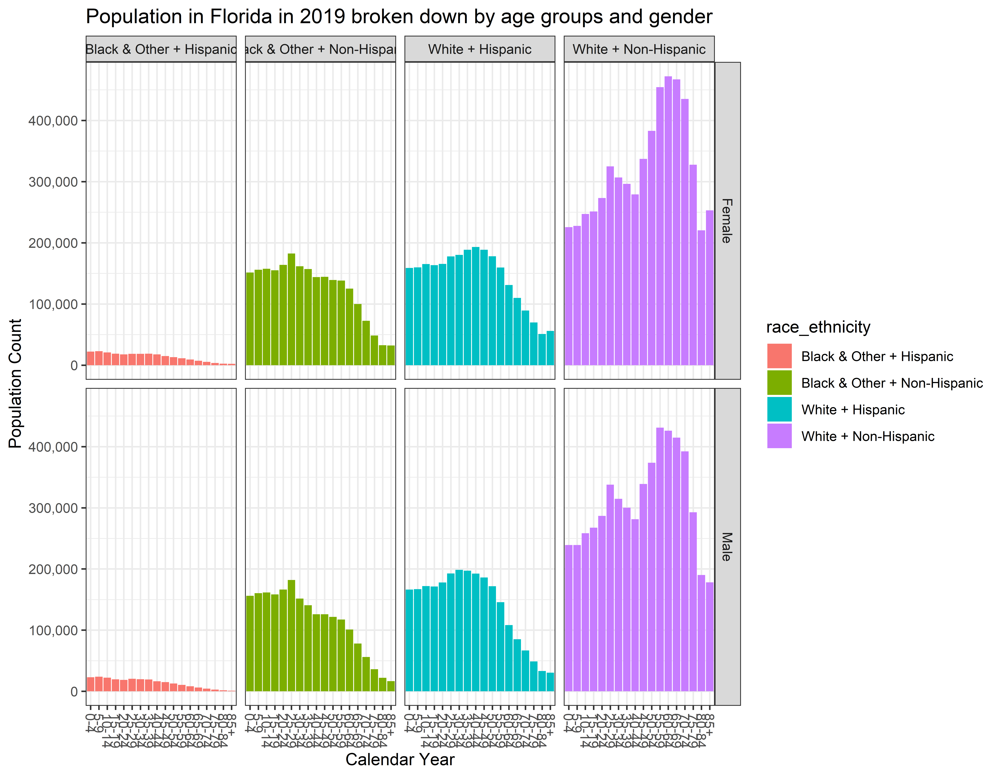
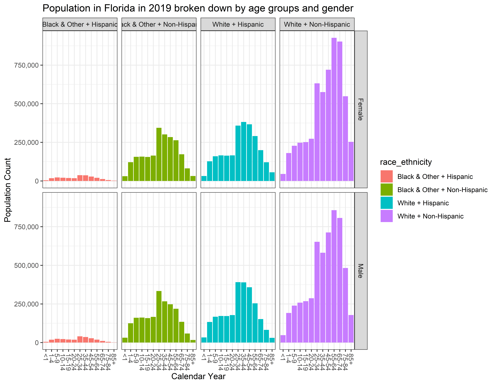

Abstract
This blogposts shows how to extract population estimates data reported by the Florida Department of Health, prepare them for analysis, and conduct basic exploration of the demographic growth.
See the report in its native environment of suicide-prevention-2019 repository here
Environment
# Attach these packages so their functions don't need to be qualified
# see http://r-pkgs.had.co.nz/namespace.html#search-path
library(magrittr) #Pipes
library(ggplot2) # graphs
library(dplyr)
requireNamespace("tidyr") # data tidying
requireNamespace("ggpubr") # publication plots
requireNamespace("readxl") # data importData Wrangling
Data Origin
The initial extract of the data was obtained from www.flhealthcharts.com a reporting tool for population counts estimated by the Florida Department of Health. The figure below shows the modifications to the default query the produces the data product used in this demonstration:

View of the reporting tool
The tool gives the option to save the product of the query as an Excel book (.xls), however, the import of this extension into R has been problematic, so I have converted (“save as”) the file manually into a more modern Excel format, .xlsx. This file is the raw source for the current report and can be dowloaded for closer inspection here.
Data import
The structure of the Excel file requires some tidying to enable a nimble analytic flow

View of the extracted data
# you will need to replace this path to the location where you stored your data file
path_file_input <- "./content/post/2020-03-27-florida-demographic-growth/data/FloridaPopulation.xlsx"ds0 <- readxl::read_excel(path_file_input, col_names = FALSE, skip = 3)Data Tweaking
We can identify several problems to address:
1. Not all columns have names
2. race, ethnicity, sex, and age_group are stored in merged spreadsheet cells
3. Sums for categories are recorded in rows as observations (e.g Total)
4. Some values of age_group are misinterpreted as dates (e.g. 1-4 becomes 4-Jan)
5. age_group does not bin the population evenly (e.g. 20-24 vs 25-34)
Tweak 1
To address (1) we skipped the first 3 lines during import, and now need to assign the name of the columns manually:
ds1 <- ds0 # duplicate to preserve the original
# because we removed the row with columns names during import:
names(ds1) <- c("race","ethnicity","sex","age_group","age",as.character(c(2006:2020)),"total")
ds1 %>% dplyr::glimpse(90)Observations: 807
Variables: 21
$ race <chr> "White", NA, NA, NA, NA, NA, NA, NA, NA, NA, NA, NA, NA, NA, NA, NA...
$ ethnicity <chr> "Hispanic", NA, NA, NA, NA, NA, NA, NA, NA, NA, NA, NA, NA, NA, NA,...
$ sex <chr> "Female", NA, NA, NA, NA, NA, NA, NA, NA, NA, NA, NA, NA, NA, NA, N...
$ age_group <chr> "<1", NA, "43834", NA, NA, NA, NA, "43960", NA, NA, NA, NA, NA, "44...
$ age <chr> "0", "Total", "1", "2", "3", "4", "Total", "5", "6", "7", "8", "9",...
$ `2006` <dbl> 33295, 33295, 24323, 24323, 24323, 24323, 97292, 25382, 25382, 2538...
$ `2007` <dbl> 32276, 32276, 25841, 25841, 25841, 25841, 103364, 26712, 26712, 267...
$ `2008` <dbl> 30429, 30429, 28693, 28693, 28693, 28693, 114772, 27637, 27637, 276...
$ `2009` <dbl> 29468, 29468, 29927, 29919, 29917, 29853, 119616, 28378, 28378, 283...
$ `2010` <dbl> 33976, 33976, 24145, 24145, 24145, 24145, 96580, 25981, 25943, 2594...
$ `2011` <dbl> 27302, 27302, 27206, 27206, 27206, 27206, 108825, 26380, 26380, 263...
$ `2012` <dbl> 26795, 26795, 27566, 27566, 27566, 27566, 110264, 26817, 26817, 268...
$ `2013` <dbl> 27240, 27240, 27774, 27774, 27774, 27774, 111097, 27613, 27613, 276...
$ `2014` <dbl> 28288, 28288, 27816, 27816, 27816, 27816, 111262, 28375, 28375, 283...
$ `2015` <dbl> 29203, 29203, 28638, 28638, 28638, 28638, 114550, 28991, 28991, 289...
$ `2016` <dbl> 29889, 29889, 29643, 29643, 29643, 29643, 118572, 29658, 29658, 296...
$ `2017` <dbl> 30593, 30593, 30386, 30386, 30386, 30386, 121545, 30362, 30362, 303...
$ `2018` <dbl> 30399, 30399, 31398, 31398, 31398, 31398, 125592, 31198, 31198, 311...
$ `2019` <dbl> 31781, 31781, 31781, 31781, 31781, 31781, 127125, 31937, 31937, 319...
$ `2020` <dbl> 32313, 32313, 32313, 32313, 32313, 32313, 129252, 32476, 32476, 324...
$ total <dbl> 453247, 453247, 427450, 427442, 427440, 427376, 1709708, 427898, 42...# Note, we will create a separate name (e.g. `ds1`, `ds2`, `ds3`, etc) only for the dataframes
#we intend to keep, otherwise we will overwrite the existing to augment with trivial changesTweak 2 and 3
To address (2) we apply tidyr::fill() which carries the observation forward until it encounters a non-empty cell. dplyr::filter addresses (3), removing observations that store total counts, while stringr::str_replace recodes values that got misinterpreted as dates.
ds1 <- ds1 %>%
# carry observations forward to fill cells missing due to Excel structure ()
tidyr::fill(race, ethnicity,sex,age_group, age) %>%
dplyr::filter(!age == "Total") # because makes data untidy, we'll compute later
ds1 %>% dplyr::glimpse(90)Observations: 688
Variables: 21
$ race <chr> "White", "White", "White", "White", "White", "White", "White", "Whi...
$ ethnicity <chr> "Hispanic", "Hispanic", "Hispanic", "Hispanic", "Hispanic", "Hispan...
$ sex <chr> "Female", "Female", "Female", "Female", "Female", "Female", "Female...
$ age_group <chr> "<1", "43834", "43834", "43834", "43834", "43960", "43960", "43960"...
$ age <chr> "0", "1", "2", "3", "4", "5", "6", "7", "8", "9", "10", "11", "12",...
$ `2006` <dbl> 33295, 24323, 24323, 24323, 24323, 25382, 25382, 25382, 25382, 2538...
$ `2007` <dbl> 32276, 25841, 25841, 25841, 25841, 26712, 26712, 26712, 26712, 2671...
$ `2008` <dbl> 30429, 28693, 28693, 28693, 28693, 27637, 27637, 27637, 27637, 2763...
$ `2009` <dbl> 29468, 29927, 29919, 29917, 29853, 28378, 28378, 28378, 28378, 2837...
$ `2010` <dbl> 33976, 24145, 24145, 24145, 24145, 25981, 25943, 25943, 25914, 2591...
$ `2011` <dbl> 27302, 27206, 27206, 27206, 27206, 26380, 26380, 26380, 26380, 2638...
$ `2012` <dbl> 26795, 27566, 27566, 27566, 27566, 26817, 26817, 26817, 26817, 2681...
$ `2013` <dbl> 27240, 27774, 27774, 27774, 27774, 27613, 27613, 27613, 27613, 2761...
$ `2014` <dbl> 28288, 27816, 27816, 27816, 27816, 28375, 28375, 28375, 28375, 2837...
$ `2015` <dbl> 29203, 28638, 28638, 28638, 28638, 28991, 28991, 28991, 28991, 2899...
$ `2016` <dbl> 29889, 29643, 29643, 29643, 29643, 29658, 29658, 29658, 29658, 2965...
$ `2017` <dbl> 30593, 30386, 30386, 30386, 30386, 30362, 30362, 30362, 30362, 3036...
$ `2018` <dbl> 30399, 31398, 31398, 31398, 31398, 31198, 31198, 31198, 31198, 3119...
$ `2019` <dbl> 31781, 31781, 31781, 31781, 31781, 31937, 31937, 31937, 31937, 3193...
$ `2020` <dbl> 32313, 32313, 32313, 32313, 32313, 32476, 32476, 32476, 32476, 3247...
$ total <dbl> 453247, 427450, 427442, 427440, 427376, 427898, 427860, 427860, 427...Tweak 4
We need to do some investigation to address (4) and recode values that got misinterpreted as dates during the import
ds1 %>% dplyr::distinct(age_group) # to find out what strings got misinterpreted# A tibble: 13 x 1
age_group
<chr>
1 <1
2 43834
3 43960
4 44118
5 15-19
6 20-24
7 25-34
8 35-44
9 45-54
10 55-64
11 65-74
12 75-84
13 85+ ds1 %>%
dplyr::filter(age_group %in% c("43834","43960","44118")) %>%
dplyr::distinct(age_group, age) # to identify how to recode# A tibble: 14 x 2
age_group age
<chr> <chr>
1 43834 1
2 43834 2
3 43834 3
4 43834 4
5 43960 5
6 43960 6
7 43960 7
8 43960 8
9 43960 9
10 44118 10
11 44118 11
12 44118 12
13 44118 13
14 44118 14 # imlement the recoding
ds1 <- ds1 %>%
dplyr::mutate(
age_group = stringr::str_replace(age_group, "43834", "1-4")
,age_group = stringr::str_replace(age_group, "43960", "5-9")
,age_group = stringr::str_replace(age_group, "44118", "10-14")
) %>%
dplyr::select(-total) # because it makes no sense in this context (adds up across the rows)
ds1 %>% glimpse(90)Observations: 688
Variables: 20
$ race <chr> "White", "White", "White", "White", "White", "White", "White", "Whi...
$ ethnicity <chr> "Hispanic", "Hispanic", "Hispanic", "Hispanic", "Hispanic", "Hispan...
$ sex <chr> "Female", "Female", "Female", "Female", "Female", "Female", "Female...
$ age_group <chr> "<1", "1-4", "1-4", "1-4", "1-4", "5-9", "5-9", "5-9", "5-9", "5-9"...
$ age <chr> "0", "1", "2", "3", "4", "5", "6", "7", "8", "9", "10", "11", "12",...
$ `2006` <dbl> 33295, 24323, 24323, 24323, 24323, 25382, 25382, 25382, 25382, 2538...
$ `2007` <dbl> 32276, 25841, 25841, 25841, 25841, 26712, 26712, 26712, 26712, 2671...
$ `2008` <dbl> 30429, 28693, 28693, 28693, 28693, 27637, 27637, 27637, 27637, 2763...
$ `2009` <dbl> 29468, 29927, 29919, 29917, 29853, 28378, 28378, 28378, 28378, 2837...
$ `2010` <dbl> 33976, 24145, 24145, 24145, 24145, 25981, 25943, 25943, 25914, 2591...
$ `2011` <dbl> 27302, 27206, 27206, 27206, 27206, 26380, 26380, 26380, 26380, 2638...
$ `2012` <dbl> 26795, 27566, 27566, 27566, 27566, 26817, 26817, 26817, 26817, 2681...
$ `2013` <dbl> 27240, 27774, 27774, 27774, 27774, 27613, 27613, 27613, 27613, 2761...
$ `2014` <dbl> 28288, 27816, 27816, 27816, 27816, 28375, 28375, 28375, 28375, 2837...
$ `2015` <dbl> 29203, 28638, 28638, 28638, 28638, 28991, 28991, 28991, 28991, 2899...
$ `2016` <dbl> 29889, 29643, 29643, 29643, 29643, 29658, 29658, 29658, 29658, 2965...
$ `2017` <dbl> 30593, 30386, 30386, 30386, 30386, 30362, 30362, 30362, 30362, 3036...
$ `2018` <dbl> 30399, 31398, 31398, 31398, 31398, 31198, 31198, 31198, 31198, 3119...
$ `2019` <dbl> 31781, 31781, 31781, 31781, 31781, 31937, 31937, 31937, 31937, 3193...
$ `2020` <dbl> 32313, 32313, 32313, 32313, 32313, 32476, 32476, 32476, 32476, 3247...Tweak 5
Now we need to recode the values of age into a new grouping variable age_group5, which will correct the unevennes of the original grouping in age_group
ds1$age_group5 <- ds1$age_group # because we want to keep the original for quality check
ds1$age_group5[ds1$age %in% c(0:4)] <- "0-4"
ds1$age_group5[ds1$age %in% c(25:29)] <- "25-29"
ds1$age_group5[ds1$age %in% c(30:34)] <- "30-34"
ds1$age_group5[ds1$age %in% c(35:39)] <- "35-39"
ds1$age_group5[ds1$age %in% c(40:44)] <- "40-44"
ds1$age_group5[ds1$age %in% c(45:49)] <- "45-49"
ds1$age_group5[ds1$age %in% c(50:54)] <- "50-54"
ds1$age_group5[ds1$age %in% c(55:59)] <- "55-59"
ds1$age_group5[ds1$age %in% c(60:64)] <- "60-64"
ds1$age_group5[ds1$age %in% c(65:69)] <- "65-69"
ds1$age_group5[ds1$age %in% c(70:74)] <- "70-74"
ds1$age_group5[ds1$age %in% c(75:79)] <- "75-79"
ds1$age_group5[ds1$age %in% c(80:84)] <- "80-84"
ds1 %>% dplyr::distinct(age_group, age_group5) # to inspect the result# A tibble: 19 x 2
age_group age_group5
<chr> <chr>
1 <1 0-4
2 1-4 0-4
3 5-9 5-9
4 10-14 10-14
5 15-19 15-19
6 20-24 20-24
7 25-34 25-29
8 25-34 30-34
9 35-44 35-39
10 35-44 40-44
11 45-54 45-49
12 45-54 50-54
13 55-64 55-59
14 55-64 60-64
15 65-74 65-69
16 65-74 70-74
17 75-84 75-79
18 75-84 80-84
19 85+ 85+ Pivot Long
To enable a more seemless graph making, as well as to provide a more convenient shape for subsequent aggregation over age groups, we need to tidyr:pivot_long (formely known as tidyr::gather) the columns storing population estimates for each year.
# to translate into a longer form with respect to year
ds2 <- ds1 %>%
tidyr::pivot_longer(cols = as.character(2006:2020),names_to = "year", values_to = "count")
ds2 %>% dplyr::glimpse(90)Observations: 10,320
Variables: 8
$ race <chr> "White", "White", "White", "White", "White", "White", "White", "Wh...
$ ethnicity <chr> "Hispanic", "Hispanic", "Hispanic", "Hispanic", "Hispanic", "Hispa...
$ sex <chr> "Female", "Female", "Female", "Female", "Female", "Female", "Femal...
$ age_group <chr> "<1", "<1", "<1", "<1", "<1", "<1", "<1", "<1", "<1", "<1", "<1", ...
$ age <chr> "0", "0", "0", "0", "0", "0", "0", "0", "0", "0", "0", "0", "0", "...
$ age_group5 <chr> "0-4", "0-4", "0-4", "0-4", "0-4", "0-4", "0-4", "0-4", "0-4", "0-...
$ year <chr> "2006", "2007", "2008", "2009", "2010", "2011", "2012", "2013", "2...
$ count <dbl> 33295, 32276, 30429, 29468, 33976, 27302, 26795, 27240, 28288, 292...# `ds2` is the source set for computing totals because it has both `age_group`` categoriesFactors
Before aggregating over age_group and age_group5 let us transform string variables into factors. so that we don’t have to do it in the individual data sets.
lvl_age_groups <-c(
"<1"
,"1-4"
,"5-9"
,"10-14"
,"15-19"
,"20-24"
,"25-34"
,"35-44"
,"45-54"
,"55-64"
,"65-74"
,"75-84"
,"85+"
)
lvl_age_groups5 <- c(
"0-4"
,"5-9"
,"10-14"
,"15-19"
,"20-24"
,"25-29"
,"30-34"
,"35-39"
,"40-44"
,"45-49"
,"50-54"
,"55-59"
,"60-64"
,"65-69"
,"70-74"
,"75-79"
,"80-84"
,"85+"
)
ds2 <- ds2 %>%
dplyr::mutate(
race_ethnicity = factor(paste0(race, " + ", ethnicity))
,race = factor(race)
,ethnicity = factor(ethnicity)
,age_group = factor(age_group, levels = lvl_age_groups)
,age_group5 = factor(age_group5, levels = lvl_age_groups5)
,age = as.integer(age)
,sex = factor(sex)
,year = as.integer(year)
) %>%
dplyr::select(race, ethnicity, age_group, age_group5, dplyr::everything())
ds2 %>% dplyr::glimpse(90)Observations: 10,320
Variables: 9
$ race <fct> White, White, White, White, White, White, White, White, White,...
$ ethnicity <fct> Hispanic, Hispanic, Hispanic, Hispanic, Hispanic, Hispanic, Hi...
$ age_group <fct> <1, <1, <1, <1, <1, <1, <1, <1, <1, <1, <1, <1, <1, <1, <1, 1-...
$ age_group5 <fct> 0-4, 0-4, 0-4, 0-4, 0-4, 0-4, 0-4, 0-4, 0-4, 0-4, 0-4, 0-4, 0-...
$ sex <fct> Female, Female, Female, Female, Female, Female, Female, Female...
$ age <int> 0, 0, 0, 0, 0, 0, 0, 0, 0, 0, 0, 0, 0, 0, 0, 1, 1, 1, 1, 1, 1,...
$ year <int> 2006, 2007, 2008, 2009, 2010, 2011, 2012, 2013, 2014, 2015, 20...
$ count <dbl> 33295, 32276, 30429, 29468, 33976, 27302, 26795, 27240, 28288,...
$ race_ethnicity <fct> White + Hispanic, White + Hispanic, White + Hispanic, White + ...Aggregate
Note that at this point, each row contains a population estimate for a given age in years. However, as you might have noticed that counts for each year of age are not unique:
ds2 %>%
dplyr::filter(
age %in% c(25:39), race_ethnicity == "White + Hispanic",sex == "Female", year==2018
) %>%
dplyr::select(race, ethnicity, age_group, age_group5, sex, age,count)# A tibble: 15 x 7
race ethnicity age_group age_group5 sex age count
<fct> <fct> <fct> <fct> <fct> <int> <dbl>
1 White Hispanic 25-34 25-29 Female 25 34479
2 White Hispanic 25-34 25-29 Female 26 34479
3 White Hispanic 25-34 25-29 Female 27 34479
4 White Hispanic 25-34 25-29 Female 28 34479
5 White Hispanic 25-34 25-29 Female 29 34479
6 White Hispanic 25-34 30-34 Female 30 35056
7 White Hispanic 25-34 30-34 Female 31 35056
8 White Hispanic 25-34 30-34 Female 32 35056
9 White Hispanic 25-34 30-34 Female 33 35056
10 White Hispanic 25-34 30-34 Female 34 35056
11 White Hispanic 35-44 35-39 Female 35 36549
12 White Hispanic 35-44 35-39 Female 36 36549
13 White Hispanic 35-44 35-39 Female 37 36549
14 White Hispanic 35-44 35-39 Female 38 36549
15 White Hispanic 35-44 35-39 Female 39 36549In fact, it appears that Florida Health Charts computes the total for 5-year category and then devides it evenly among constituent elements of the age_category. My guess, this deals with privacy guidelines. Therefore, the most granualar age break up is only 5-year categories.
To preserve the original grouping we create two separate datasets, each providing the totals for respective age category.
ds_age_group <- ds2 %>%
dplyr::group_by(race, ethnicity, sex, age_group, year) %>%
dplyr::summarize(
count = sum(count, na.rm = T)
) %>%
dplyr::ungroup() %>%
dplyr::mutate(
race_ethnicity = paste0(race, " + ", ethnicity),
race_ethnicity = factor(race_ethnicity)
)
ds_age_group5 <- ds2 %>%
dplyr::group_by(race, ethnicity, sex, age_group5, year) %>%
dplyr::summarize(
count = sum(count, na.rm = T)
) %>%
dplyr::ungroup() %>%
dplyr::mutate(
race_ethnicity = paste0(race, " + ", ethnicity),
race_ethnicity = factor(race_ethnicity)
)It is the ds_age_group5 that will be focus of subsequent graphs. However, to better demonstrate why we needed to create new grouping of ages, we will preserve both dataframes.
Save to disk
list(
"ds_wide" = ds1
,"ds_long" = ds2
,"ds_age_group" = ds_age_group
,"ds_age_group3" = ds_age_group5
) %>%
saveRDS("./content/post/2020-03-27-florida-demographic-growth/data/clean_data.rds")The cleaned version of this dataset is available for download here.
Graphing
Total population
How does the total population of Florida changes between 2006 and 2020?
# Total population of Florida over the years
ds_age_group5 %>%
dplyr::group_by(year) %>%
dplyr::summarize(
count = sum(count, na.rm = T)
) %>%
ggplot(aes(x=year, y = count))+
geom_point()+
geom_line()+
scale_y_continuous(labels = scales::comma)+
theme_bw()
Ethnic groups: Together
How does each ethnic group change during this time?
# total population of Florida by broken down by 4 ethnic groups (race_ethnicity)
d1 <- ds_age_group5 %>%
dplyr::group_by(race_ethnicity, year) %>%
dplyr::summarize(
n_people = sum(count, rm.na = T)
)
g1 <- d1 %>%
ggplot(aes(x = year, y = n_people, color = race_ethnicity))+
geom_line(aes(group = race_ethnicity))+
geom_point(shape = 21, fill = NA, size =2)+
scale_y_continuous(labels = scales::comma)+
theme_bw()+
theme(
axis.text.x = element_text(angle = - 90,vjust =.5, hjust = -0)
#https://stackoverflow.com/questions/1330989/rotating-and-spacing-axis-labels-in-ggplot2
)+
labs(
title = "Population growth in Florida over last 15 years \n broken down by ethnic groups"
,color = "Ethnic Group"
,x = "Calendar Year"
,y = "Population Count"
)
g1
Ethnic groups: Separate
what Ethnic group is most dissimilar from the other three in their dynamics?
# Q: what Ethnic group is most dissimilar from the other three in their dynamics?
g1 + facet_wrap(~race_ethnicity, scale = "free_y")
# A: "White + Non-Hispanic" because of a "dip" in late 2000'sAge composition in 2019
What is the age composition of each ethnic group in 2019?
# Build a graph showing age composition of all ethnic groups in 2019
g2 <- ds_age_group5 %>%
dplyr::filter(year == 2019) %>%
ggplot(aes(x = age_group5, y = count, fill = race_ethnicity)) +
geom_col()+
facet_grid(sex ~ race_ethnicity)+
scale_y_continuous(labels = scales::comma)+
# https://stackoverflow.com/questions/14563989/force-r-to-stop-plotting-abbreviated-axis-labels-e-g-1e00-in-ggplot2 also https://r-graphics.org/recipe-axes-tick-label
theme_bw()+
theme(
axis.text.x = element_text(angle = - 90,vjust =.5, hjust = -0)
#https://stackoverflow.com/questions/1330989/rotating-and-spacing-axis-labels-in-ggplot2
)+
labs(
title = "Population in Florida in 2019 broken down by age groups and gender"
,color = "Ethnic Group"
,x = "Calendar Year"
,y = "Population Count"
)
g2
What would it look like if we used the original
age_group?
g2a <- ds_age_group %>%
dplyr::filter(year == 2019) %>%
ggplot(aes(x = age_group, y = count, fill = race_ethnicity)) +
geom_col()+
facet_grid(sex ~ race_ethnicity)+
scale_y_continuous(labels = scales::comma)+
# https://stackoverflow.com/questions/14563989/force-r-to-stop-plotting-abbreviated-axis-labels-e-g-1e00-in-ggplot2 also https://r-graphics.org/recipe-axes-tick-label
theme_bw()+
theme(
axis.text.x = element_text(angle = - 90,vjust =.5, hjust = -0)
#https://stackoverflow.com/questions/1330989/rotating-and-spacing-axis-labels-in-ggplot2
)+
labs(
title = "Population in Florida in 2019 broken down by age groups and gender"
,color = "Ethnic Group"
,x = "Calendar Year"
,y = "Population Count"
)
g2a
session information
For the sake of documentation and reproducibility, the current report was rendered in the following environment. Click the line below to expand.
Environment
- Session info -------------------------------------------------------------------------------------------------------
setting value
version R version 3.6.2 (2019-12-12)
os Windows 10 x64
system x86_64, mingw32
ui RTerm
language (EN)
collate English_United States.1252
ctype English_United States.1252
tz America/New_York
date 2020-03-29
- Packages -----------------------------------------------------------------------------------------------------------
package * version date lib source
assertthat 0.2.1 2019-03-21 [1] CRAN (R 3.6.2)
backports 1.1.5 2019-10-02 [1] CRAN (R 3.6.1)
blogdown 0.17 2019-11-13 [1] CRAN (R 3.6.2)
bookdown 0.17 2020-01-11 [1] CRAN (R 3.6.2)
callr 3.4.2 2020-02-12 [1] CRAN (R 3.6.2)
cellranger 1.1.0 2016-07-27 [1] CRAN (R 3.6.2)
cli 2.0.1 2020-01-08 [1] CRAN (R 3.6.2)
colorspace 1.4-1 2019-03-18 [1] CRAN (R 3.6.1)
crayon 1.3.4 2017-09-16 [1] CRAN (R 3.6.2)
desc 1.2.0 2018-05-01 [1] CRAN (R 3.6.2)
devtools 2.2.2 2020-02-17 [1] CRAN (R 3.6.3)
digest 0.6.24 2020-02-12 [1] CRAN (R 3.6.2)
dplyr * 0.8.4 2020-01-31 [1] CRAN (R 3.6.2)
ellipsis 0.3.0 2019-09-20 [1] CRAN (R 3.6.2)
evaluate 0.14 2019-05-28 [1] CRAN (R 3.6.2)
fansi 0.4.1 2020-01-08 [1] CRAN (R 3.6.2)
fs 1.3.1 2019-05-06 [1] CRAN (R 3.6.2)
ggplot2 * 3.2.1 2019-08-10 [1] CRAN (R 3.6.2)
ggpubr 0.2.5 2020-02-13 [1] CRAN (R 3.6.2)
ggsignif 0.6.0 2019-08-08 [1] CRAN (R 3.6.2)
glue 1.3.1 2019-03-12 [1] CRAN (R 3.6.2)
gtable 0.3.0 2019-03-25 [1] CRAN (R 3.6.2)
htmltools 0.4.0 2019-10-04 [1] CRAN (R 3.6.2)
knitr * 1.28 2020-02-06 [1] CRAN (R 3.6.2)
lazyeval 0.2.2 2019-03-15 [1] CRAN (R 3.6.2)
lifecycle 0.1.0 2019-08-01 [1] CRAN (R 3.6.2)
magrittr * 1.5 2014-11-22 [1] CRAN (R 3.6.2)
memoise 1.1.0 2017-04-21 [1] CRAN (R 3.6.2)
munsell 0.5.0 2018-06-12 [1] CRAN (R 3.6.2)
pillar 1.4.3 2019-12-20 [1] CRAN (R 3.6.2)
pkgbuild 1.0.6 2019-10-09 [1] CRAN (R 3.6.2)
pkgconfig 2.0.3 2019-09-22 [1] CRAN (R 3.6.2)
pkgload 1.0.2 2018-10-29 [1] CRAN (R 3.6.2)
prettyunits 1.1.1 2020-01-24 [1] CRAN (R 3.6.2)
processx 3.4.2 2020-02-09 [1] CRAN (R 3.6.2)
ps 1.3.2 2020-02-13 [1] CRAN (R 3.6.2)
purrr 0.3.3 2019-10-18 [1] CRAN (R 3.6.2)
R6 2.4.1 2019-11-12 [1] CRAN (R 3.6.2)
Rcpp 1.0.3 2019-11-08 [1] CRAN (R 3.6.2)
readxl 1.3.1 2019-03-13 [1] CRAN (R 3.6.2)
remotes 2.1.1 2020-02-15 [1] CRAN (R 3.6.2)
rlang 0.4.4 2020-01-28 [1] CRAN (R 3.6.2)
rmarkdown 2.1 2020-01-20 [1] CRAN (R 3.6.2)
rprojroot 1.3-2 2018-01-03 [1] CRAN (R 3.6.2)
scales 1.1.0 2019-11-18 [1] CRAN (R 3.6.2)
sessioninfo 1.1.1 2018-11-05 [1] CRAN (R 3.6.2)
stringi 1.4.5 2020-01-11 [1] CRAN (R 3.6.2)
stringr 1.4.0 2019-02-10 [1] CRAN (R 3.6.2)
testthat 2.3.1 2019-12-01 [1] CRAN (R 3.6.2)
tibble 2.1.3 2019-06-06 [1] CRAN (R 3.6.2)
tidyr 1.0.2 2020-01-24 [1] CRAN (R 3.6.2)
tidyselect 1.0.0 2020-01-27 [1] CRAN (R 3.6.2)
usethis 1.5.1 2019-07-04 [1] CRAN (R 3.6.2)
utf8 1.1.4 2018-05-24 [1] CRAN (R 3.6.2)
vctrs 0.2.2 2020-01-24 [1] CRAN (R 3.6.2)
withr 2.1.2 2018-03-15 [1] CRAN (R 3.6.2)
xfun 0.12 2020-01-13 [1] CRAN (R 3.6.2)
yaml 2.2.1 2020-02-01 [1] CRAN (R 3.6.2)
[1] C:/Users/an499583/Documents/R/win-library/3.6
[2] C:/Program Files/R/R-3.6.2/library